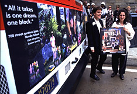
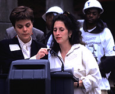

|  |
 |
| Carolyn P. Speranza [left in both pictures] and Lisa Link, artists and co-authors
of "End of the Line" pose for the press in front of the bus at
Penn Station and give the following presentation from the podium: |
Carolyn: Greetings. This is Lisa Link and I am Carolyn Speranza.
We are the artist co-authors of End of the Line art project and we'd like
to welcome you to this "kick off" event.
Lisa: "End of the Line" is a series of collages on
the exterior of twenty PAT buses and a poster honoring the six participating
neighborhood Libraries. (hold up poster)
Carolyn: We created "End of the Line" together as a
team with people from the six Pittsburgh neighborhoods of Beechview, Hazelwood,
Lawrenceville, Homeward, the Northside and the West End.
Lisa: We went to the Carnegie Libraries in each of the six neighborhood
last summer and taught collage workshops. People brought in photographs
from their neighborhoods and told us amazing stories.
Carolyn: Visiting these neighborhoods and listening to residents,
we found common themes and concerns and they were: Rebuilding the community,
Urban removal, Community gardens, Community heroes, and the importance of
Pittsburgh's Libraries.
Lisa: We assembled the actual collages about these themes using
computer imaging technology. We printed them on vinyl.
Carolyn: We really admire other cities that have strong art in
public transit programs and wanted to do the same thing here in Pittsburgh.
Lisa: We chose the bus as method of display because buses go
out to the neighborhoods and cross geographic boundaries. The buses bring
the images back to the people who helped make them.
Carolyn: Here you see the "Urban Rebuilding" collage
which combines images from the different neighborhoods. ( discusses the
following segments of the billboard image)
Quote from a workshop participant
Architectural detail from a Lawrenceville renovation project
Shovels -Groundbreaking Ceremony by Manchester Citizen's Corporation
Lisa discusses these segments of the billboard image:
New Housing construction in Hazelwood
Workers from Youthbuild based in Homewood
Paint Your Heart out Project from Beechview
Carolyn: You can see from this example that our goal with "End
of the Line" is to create a populist artwork working with innovative
technology and people from all over the city.
Lisa: We volunteered our time outside of our jobs and family
for a year to complete this project.
And now, we would like introduce some of our partners who also volunteered
their time towards this project.
|